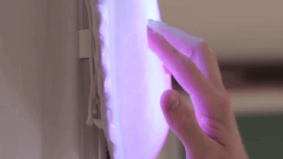
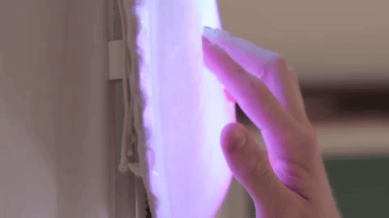

Andreas Almqvist
Interaction Design Researcher
Lune is a concave disc that slides vertically on a rail attached to the wall. Approaching Lune, you start by gliding the disc down in a slow movement to the center of your body, feeling the mouldable qualities of the disc that welcomes touch. As the hands sink in to it, the disc can be pushed in and slid, maybe down and up, eventually ending in a full stretch above your head, where the disc docks with a magnetic pull and the disc ignites with softly blending colors. It resembles the initiating sun salutation movement in yoga practice. The gliding movement's sluggish yet yielding inertia together with the discs gelatine-y surface makes up a coherent physique which intends to encourage fulfilling bodily manifestations to take place; deriving oneself from a way of being to another; priming one into other directions through enacting the change that will be.
Furthermore, this project is a case study for how interaction designs and processes can be understood as ritualizing, with the help of religious scholar Catherine Bell’s prominent Ritual Theory and Ritual Practice [1]. Lune’s design process show how the soma design philosophy contributes key elements to ritualizing design in how it addresses our whole somatic selves: mind and body as one, linking emotion and movement to engage in how we respond to tensions in the home and beyond. In a forthcoming project, these design implications for ritualizing interaction design will be elaborated upon .
 

Somaesthetic interaction design emphasizes the importance for designers of a holistic view of the body in our lived and felt experiences. It explores other ways of designing than traditional language- and symbol-based interfaces which often intends to minimize bodily effort and focuses exclusively on eyes and hands. Thus, a first-person perspective was deployed throughout the research through design process, cultivating an appreciation bodily experiences as a design resource.
Together with professional instructors, me and my design colleague engaged with Feldenkrais practice, contact improvisation, slow walks in the forest, a-labs (aesthetic laborations) [2], magic machine workshop [3], object theatre [4], interaction relabelling [5], OWL bodyProps [6], and other methods for embodied ideation, and complemented these with a body map before and after each activity to nurture our bodily awareness. Sharing these activities and reflections together with my design colleague, we began to establish a common ground of aesthetics.
In estranging ourselves to our homes, we identified a tension with clocktime and how it dominates much of our experiences in the home. Typical clocks in the home show time in a concrete manner, with detail and time passage clearly and linearly displayed. The practicality of clocktime is essential to many aspects of the modern domestic life, but we argue that this practicality is also part of a greater trouble. Does this clocktime suggest that it is through a practical lens that we should view the progression of a day and fit our experiences snugly into? Our felt experience of this is a sort of regression of possibilities to tend to whatever one fancies, to float around and to progress with the day more serenely.
At this point, when we had identified a potent tension to address through design, we turned our perspectives from what to design against, to what to design for. Our intention become to designing for being at peace with passage of time, and to compose time for yourself to do whatever you fancy.
We outlined the sequence of sensitizing, manifesting and preserving as compelling stages in strive for such attitude. In deconstructing this situation, we found parallels to Cognitive Dissonance Theory [7] and Emotion Regulation Theory [8]. The theory describes how such inconsistencies between desires or ideas motivate a person towards resolution in how they cause stress and tension in affect. The theory explains ways of how the dissonance may be addressed, engaging in a kind of emotion regulation. One can procrastinate [9], that is, intend a change but not act upon it, even though you expect to be worse off due to the delay; there could be achange of the sentiments involved, meaning, for instance, you assert that you don’t need to engage with the activity at the moment for some reason; or, there could be engagement withan act that changes the state of the external world, thereby acting towards resolution. We explored narratives in support of the latter, a more active alternative.

One of the main somaesthetic qualities we aimed to capture was present in the sensation of sliding the disc. The inertia in moving the disc with your hands - in extension, your arms, shoulders and back - should resemble the resistance and texture of the disc itself, as if it were gliding through the viscous material. Inertia in the sliding and changing of direction makes a monophonic piece in the union with the disc's attributes. The disc has elastic silky fabric over transparent rubber stretched across slime. We experimented with different hardnesses and amounts of slime on the acrylic disc. We sought a feeling that wouldn't swallow the hand but gently accept its landing. The smooth qualities of the fabric encourages stroking and keeps the slime tightly in place with the rubber shield.
Since there is no right or wrong way to perform the movement within the limits of the culmination, one can compose their own movements with the disc, adapting it to one's own particular soma and inclination. The interaction always varies within certain boundaries, which is where a potential of the ritual design lies. The amount of time earnestly engaged with the interaction is of significance to nurture the capacity of sensitizing oneself for a meaningful manifestation. This is encouraged with the sliding resistance, making it unsuitable for quick, mindless and casual engagement.
At the culminating moment, the disc ignites with the calm swiftness of opening eyes after sleep, filling the circle with asymmetrical blending colors. The final movement is aided by a magnet which lightly pulls the disc and the top of the frame together. This magnetism represents an aesthetic quality extracted from the initial bolidy estrangement methods, present in forms of improvised dance and contact, where it's possible to lose track of who is guiding who, similar to this magnetic sensation.
The ignition of the light symbolizes the fulfillment of the interaction and the closure of the ritual. The light later accompanies the user further with the slowly shifting colors, at a rate so slow it cannot be perceived if stared at for a short time. The light always ignites differently within a palette of colors inspired by our aesthetic vocabulary. The undulating colors remain in effect for around a couple of hours to have a substantial presence during the next activity.